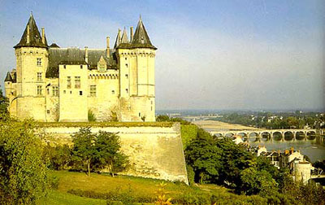

Этот загородный замок был так прекрасен, что Рене Анжуйский, король-поэт, выбрал именно его из множества других, чтобы описать замок Любви в своем романе "Сердце, плененное Любовью": "...этот прекрасный увеселительный замок был построен на изумрудной скале, по которой проходила жила из сверкающих алмазов, рассыпанных повсюду, их было даже больше, чем изумрудов. 
Четыре стены этого прекрасного замка были из чистого хрусталя, а в конце каждой стены стояла толстая башня, сделанная из драгоценных рубиновых камней, которые горели огнем; каждый из этих камней был больше человеческого роста. А покрыты были эти башни платиной шириной в ладонь, а дом между башнями был покрыт черепицами из чистого золота, на которых эмалью искусно был выведен девиз Бога Любви: Трепетному сердцу.
А чтобы лучше представить себе этот замок, его можно сравнить разве что с Сомюром в Анжу, который стоит на реке Луаре."